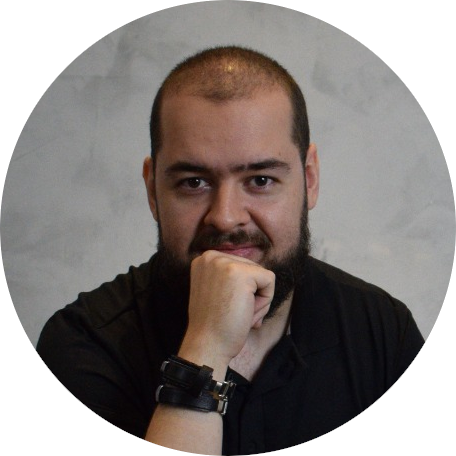

Quem sou eu?
Um pouquinho sobre mim
Oi, meu nome é Mateus, tenho 31 e sou natural de Campo Bom/RS.
Que tal a gente se conhecer um pouco? Aqui vão algumas informações sobre mim:
Sou um nerd clássico: gosto de música, cinema, quadrinhos e jogos. Além de nerd, também sou um gordinho
clássico, gosto de hamburguer, pizza, sushi e churrasco. E, embora o perfil não demonstre, gosto de
treinar todos os dias, mas definitivamente não sou um cara dos esportes. A minha cor favorita é laranja
e quanto aos meus hobbies, venho tentando aprender a tocar guitarra há alguns anos (sem sucesso). Minha
verdadeira paixão fica com os games retrô e meu Super Nintendo. Mas claro que nada disso supera o amor
que tenho pela minha esposa ❤. Foi por causa dela
que eu consegui mudar de
área e perseguir meu
sonho
de trabalhar como desenvolvedor.
A estrada até aqui
Minha vida profissional remonta do início dos anos 2000, acompanhando meus pais no comércio, onde adquiri desde pequeno um tato diferenciado para lidar com pessoas. Devido ao histórico, sempre quis ter meu próprio negócio, e iniciei meus trabalhos com manutenção de computadores entre meados de 2008 e 2009. Em 2013, abri minha loja: Hardtec Informática. Com pouco mais de 20 anos, sem experiência concreta e pouco capital, tive que fechá-la em menos de 6 meses e pela primeira vez optei por conseguir um emprego formal. Logo em minha primeira entrevista, consegui um emprego na Setta Informática, onde fiquei por quase 3 anos.
Após isso, em 2017 reabri a Hardtec. Mais experiente, porém ainda havia pouco dinheiro em caixa. Desta forma, tive a oportunidade de trabalhar prestando serviços para empresas locais, como GetNet, Arrezo e TicketLog. Estas experiencias ampliaram muito meus conhecimentos, o que me levou ao meu segundo emprego formal, na Secullum Software em 2021. Trabalhei então como analista de infraestrutura e conheci a programação, o que despertou em mim um desejo de mudança. Após dois anos como analista, estava decidido a iniciar um novo ciclo em minha vida. Desta forma, saí do meu emprego e fechei minha loja no início de 2024, a partir daqui eu estaria pronto para me tornar um desenvolvedor.
Apesar de ter uma trajetória sólida e um talento nato para atendimento e vendas, nunca fui bom em "me vender". Não acumulei registros, fotos ou quaisquer outras formas de montar um portifólio do meu trabalho. Porém mudando de carreira, isto agora pouco importa, não há como mudar o passado. Então, agora é olhar para frente e buscar estes novos horizontes.
Para onde vamos de agora em diante?
Em 2021, dei início aos meus estudos cursando Análise e Desenvolvimento de Sistemas pela Unisinos, no RS. Infelizmente, por motivos adversos, tive que trancar e voltar diversas vezes. A meta agora é concluir até 2027.
Em 2024 retomei os estudos através do curso.dev o Filipe Deschamps, onde tive contato sólido com os conceitos de versionamento. Porém, percebi que ainda faltava muito do básico mesmo, então, seguindo a recomendação do próprio Filipe, busquei mais conhecimento com o professor Gustavo Guanabara na plataforma do CursoemVideo. Já havia tentado aprender em outras plataformas e feito outros cursos, mas foi aqui que realmente aprendi JavaScript, HTML e CSS e forma consistente. Agora estes conhecimentos me dão segurança para buscar a minha primeira oportunidade na área.
E aí, será que você vai ser o responsável por essa oportunidade?
Vamos
trabalhar juntos e começar um novo ciclo? Então me chama pra gente conversar
melhor!